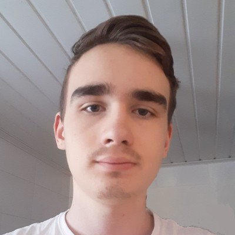

Gustav, 23 år från Uppsala. Jag är social och lätt att samarbeta, väldigt flexibel och stresstålig. Kreativ och lösningsorienterad, kan ha flera bollar i luften och är organiserad samtidigt. Gillar naturen och fiska, är intresserad i teknik och datorer. Gillar datorspel, även intresserad i världsmarknaden.
Min bakgrund är att jag är svensk och finsk, och jag föddes och bott i Uppsala hela mitt liv. Ser en framtid i denna fantastiska stad, men såklart är pendlingsmöjligheterna även goda. Jag har hållit på med datorer hela mitt liv i princip, så jag har väldigt mycket erfarenhet av ämnet.
Tidigare jobbat på ett äldreboende i olika roller utan vårdinriktning, utbildad som Webmaster på högskolenivå där jag lärt mig brett om IT och utveckling. Gjort hemsidor till företag innan, och utvecklat egna. Haft en praktik på ett 3D- och techbolag, Animech i Uppsala, där jag jobbade med webbutveckling. Dom är välkända inom branschen och stora inom området 3D och visualisering, men jag jobbade med marknadsarbete.
Arbetat med en webbshop och hemsida till ett företag, med WordPress och Visma Spiris. Just nu har jag en praktik på ett IT företag i Uppsala, jag är taggad på möjligheterna inom detta yrke.